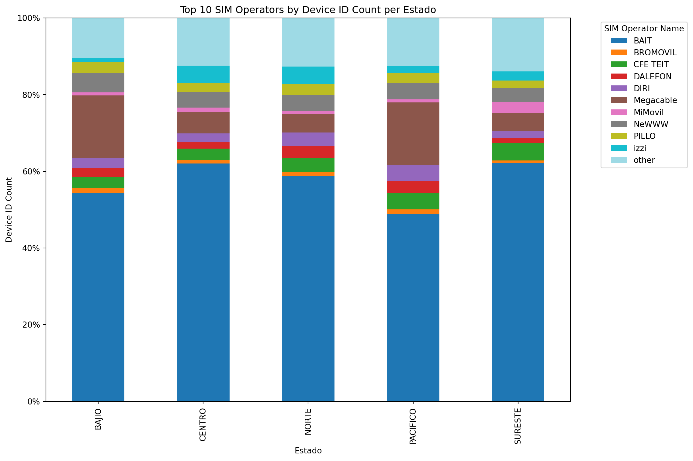
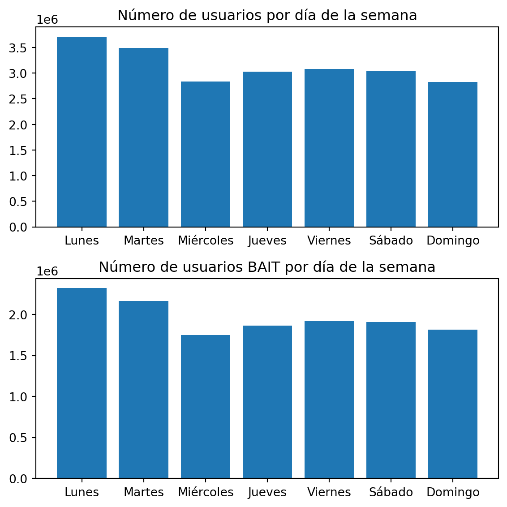
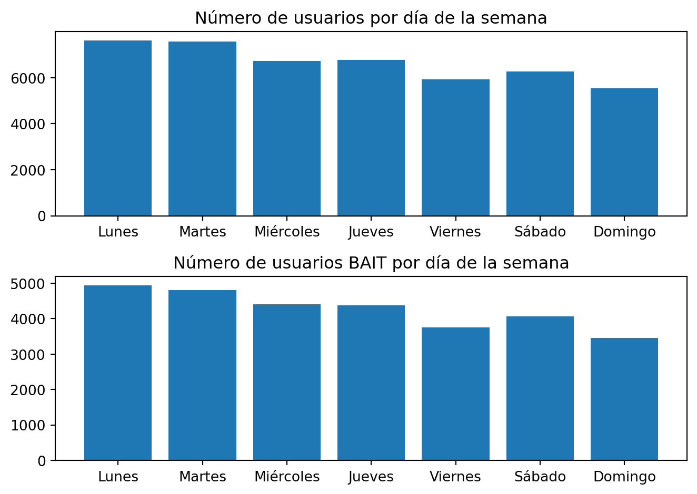

BAIT
Reporte mensual por tienda
¡Hola, Operador! Este reporte está creado para darte la visibilidad del estatus de los usuarios de Bait de tu operación. El objetivo del mismo es dar las herramientas mínimas necesarias para que puedas crear estrategias en torno a Bait y tu operación. Recuerda que somos el Operador Móvil Virtual Número 1 en México. ¡Vamos por las ventas!
Participación de mercado
Zonas Nielsen:
BAJÍO: Aguascalientes, Jalisco, Guanajuato, Colima, Michoacán
PACÍFICO: Baja California, Baja California Sur, Sinaloa, Sonora, Nayarit
NORTE: Chihuahua, Coahuila, Durango, Nuevo León, San Luis Potosí, Tamaulipas, Zacatecas
SURESTE: Campeche, Chiapas, Oaxaca, Quintana Roo, Tabasco, Veracruz, Yucatán
CENTRO: CDMX, Guerrero, Hidalgo, EDOMEX, Morelos, Puebla, Querétaro, Tlaxcala
Tomando en cuenta a todos los Operadores Móviles Virtuales (OMVs) de la red de ALTÁN, podemos visualizar la participación de Bait vs los otros operadores del mercado. Es evidente que en todas las zonas del país Bait es el OMV número 1. La zona con mayor participación es SURESTE con un 62.11%, por otro lado, la zona con menor participación es PACIFICO con un 48.84%. Con esto, se recomienda replicar la estrategia de venta que está generado la zona SURESTE en PACIFICO .
Por otro lado, a nivel nacional los siguientes 4 OMVs con mayor participación de mercado son Megacable, NeWWW, izzi y CFE TEIT. Es imperante entender qué están haciendo estos operadores en las zonas que están teniendo más penetración para que Bait mantenga su posición en el mercado.
Presencia nacional
En el siguiente mapa se puede observar la presencia nacional de Bait en cada una de las tiendas (puntos de venta). El color de la burbuja nos indica el número de clientes Bait por tienda. Para decidir si un cliente Bait es de una tienda en específico a cada conexión registrada en la base de datos se le asigna la tienda más cercana. Posteriormente, a cada usuario registrado, se le asigna la tienda donde se hayan registrado el mayor número de conexiones.
Como se puede observar el centro del país es donde se tiene un mayor número de clientes Bait, lo cual está relacionado a la cantidad de unidades en la región. Lo anterior nos confirma la alta dependencia que tenemos de los puntos de venta físicos para seguir generando nuevos usuarios, le sigue la región sureste y por último la región norte, la cual tiene el menor número de clientes activos Bait.
Análisis de tiendas por region
Es importante replicar las buenas prácticas que están realizando las tiendas con mayor número de usuarios, asimismo, es imperante que las tiendas con menor número de usuarios ejecuten nuevas estrategias para no distanciarse más de las mejores. A nivel nacional las tiendas top por formato son:
- Bodega Aurrera: BODEGA AURRERA NAHIL 2476
- Walmart Supercenter: SUPERCENTER CD MADERO 4025
- Sams: SAMS AVIACION 6286
A continuación, se verán las 5 tiendas Top vs 5 tiendas Bottom de cada una de las Zonas Nielsen del país:
'Top 5 tiendas BAJIO'| Nombre | Formato | Estado | Clientes_reales | |
|---|---|---|---|---|
| 28 | MI BODEGA PLUTARCO ELIAS CALLES 1729 | bodega aurrera | guanajuato | 59 |
| 32 | BODEGA SILAO 2038 | bodega aurrera | guanajuato | 58 |
| 31 | BODEGA ALFREDO JIMENEZ 1422 | bodega aurrera | guanajuato | 58 |
| 101 | BA EXPRESS ESTANCIA 3559 | bodega aurrera | guanajuato | 38 |
| 107 | BA EXPRESS PARQUES TESISTAN 3334 | bodega aurrera | jalisco | 37 |
'Bottom 5 tiendas BAJIO'| Nombre | Formato | Estado | Clientes_reales | |
|---|---|---|---|---|
| 2374 | MI BODEGA COCULA JALISCO 1648 | bodega aurrera | jalisco | 1 |
| 2373 | MI BODEGA LIENZO 1812 | bodega aurrera | jalisco | 1 |
| 2368 | B JARDINES COLON 2868 | bodega aurrera | jalisco | 1 |
| 2365 | VILLA REAL SAMS 6296 | sams | jalisco | 1 |
| 2466 | BA EXPRESS ALICANTE 5452 | bodega aurrera | michoacán | 1 |
'Top 5 tiendas PACIFICO'| Nombre | Formato | Estado | Clientes_reales | |
|---|---|---|---|---|
| 307 | SUPERCENTER TIJUANA 2000 4155 | supercenter | baja california | 24 |
| 337 | BODEGA HERMOSILLO NORTE 1034 | bodega aurrera | sonora | 23 |
| 386 | BODEGA AV MEXICO II 2112 | bodega aurrera | nayarit | 22 |
| 422 | BODEGA MEXICALI SUR 1417 | bodega aurrera | baja california | 21 |
| 454 | BA EXPRESS VENADOS 2980 | bodega aurrera | sinaloa | 20 |
'Bottom 5 tiendas PACIFICO'| Nombre | Formato | Estado | Clientes_reales | |
|---|---|---|---|---|
| 2360 | BA EXPRESS DIAMANTE 2614 | bodega aurrera | sinaloa | 1 |
| 2357 | MI BODEGA JAVIER MINA 5675 | bodega aurrera | baja california | 1 |
| 2356 | MI BODEGA AURRERA VILLA NAYARIT 3570 | bodega aurrera | nayarit | 1 |
| 2354 | MI BODEGA MAGDALENA DE KINO 1478 | bodega aurrera | sonora | 1 |
| 2456 | SAM S MEXICALI 4728 | sams | baja california | 1 |
'Top 5 tiendas NORTE'| Nombre | Formato | Estado | Clientes_reales | |
|---|---|---|---|---|
| 4 | SUPERCENTER CD MADERO 4025 | supercenter | tamaulipas | 105 |
| 9 | BA EXPRESS POZOS 2972 | bodega aurrera | san luis potosí | 76 |
| 10 | BODEGA MULTIPLAZA REAL 3073 | bodega aurrera | tamaulipas | 75 |
| 67 | BOA ALTAMIRA 2457 | bodega aurrera | tamaulipas | 45 |
| 108 | BODEGA RINCON SN ANTONIO 3019 | bodega aurrera | durango | 36 |
'Bottom 5 tiendas NORTE'| Nombre | Formato | Estado | Clientes_reales | |
|---|---|---|---|---|
| 2395 | SUPERCENTER CERRO DE LA SILLA 1833 | supercenter | nuevo león | 1 |
| 2396 | SAM S SAN NICOLAS 2179 | sams | nuevo león | 1 |
| 2397 | BA EXPRESS LOS PUERTOS DE JUAREZ 1447 | bodega aurrera | nuevo león | 1 |
| 2398 | SAM S ROTONDA 6213 | sams | san luis potosí | 1 |
| 2475 | BODEGA ESCOBEDO 3298 | bodega aurrera | nuevo león | 1 |
'Top 5 tiendas SURESTE'| Nombre | Formato | Estado | Clientes_reales | |
|---|---|---|---|---|
| 0 | BODEGA AURRERA NAHIL 2476 | bodega aurrera | quintana roo | 160 |
| 1 | BODEGA CIUDAD INDUSTRIAL 1101 | bodega aurrera | tabasco | 127 |
| 3 | BODEGA GLORIETA CAUCEL 3295 | bodega aurrera | yucatán | 112 |
| 8 | BODEGA AURRERA | bodega aurrera | yucatán | 78 |
| 11 | BODEGA VILLAS OTOCH 1665 | bodega aurrera | quintana roo | 75 |
'Bottom 5 tiendas SURESTE'| Nombre | Formato | Estado | Clientes_reales | |
|---|---|---|---|---|
| 2406 | SAM S VILLAHERMOSA 6574 | sams | tabasco | 1 |
| 2439 | MB TECOLUTILLA 2332 | bodega aurrera | tabasco | 1 |
| 2447 | MI BODEGA TUXTLA CHICO 1230 | bodega aurrera | chiapas | 1 |
| 2449 | BODEGA AURRERA | bodega aurrera | oaxaca | 1 |
| 2452 | ESTACIONAMIENTO DE MI BODEGA AURRERA | bodega aurrera | oaxaca | 1 |
'Top 5 tiendas CENTRO'| Nombre | Formato | Estado | Clientes_reales | |
|---|---|---|---|---|
| 2 | MI BODEGA IXTLAHUACA 1194 | bodega aurrera | méxico | 114 |
| 5 | BODEGA SAN BUENAVENTURA 1001 | bodega aurrera | méxico | 100 |
| 6 | BODEGA PEDRO RAMIREZ 1853 | bodega aurrera | distrito federal | 97 |
| 7 | BODEGA XONACATLAN 2141 | bodega aurrera | méxico | 79 |
| 12 | MI BODEGA JILOTEPEC 3047 | bodega aurrera | méxico | 74 |
'Bottom 5 tiendas CENTRO'| Nombre | Formato | Estado | Clientes_reales | |
|---|---|---|---|---|
| 2381 | TIENDAS WALMART | walmart | méxico | 1 |
| 2371 | SUPERCENTER SANTA ELENA 1423 | supercenter | méxico | 1 |
| 2366 | BANCO WAL MART DE MEXICO ADELANTE BA SAN JUANICO | bodega aurrera | méxico | 1 |
| 2364 | BAE TEPANTONGO FT 4766 | bodega aurrera | méxico | 1 |
| 2471 | SAM S ECATEPEC CENTRO 6232 | sams | méxico | 1 |
Análisis temporal
Distribución de usuarios por día de la semana

Debido a que se tienen todas las conexiones de los usuarios de todos los OMVs, podemos identificar clientes potenciales para cada tienda con base en el número de usuarios que están activos en el mismo código postal de la unidad. Por ello, podemos identificar qué día de la semana hay más clientes potenciales vs el día con menor número. Por otro lado, se puede visualizar el mismo comportamiento, pero con el número de clientes Bait. Al realizar este contraste, podemos ver que el día que más usuarios potenciales están cercanos a la unidad es el Lunes, por el contrario, el día con menos usuarios potenciales, en el cual se podrían crear distintas estrategias para incentivar la presencia de más clientes es el Domingo.
Tienda Top: {python} df_bait_users_per_store.head(n=1)[“Nombre”][0]
Esta tienda es del formato {python} df_bait_users_per_store.head(n=1)[“Formato”][0], la cual tiene {python} df_bait_users_per_store.head(n=1)[“Clientes_reales”][0] usuarios Bait.
Total Población:El día con más usuarios es el {python} best_day_traffic_top, por el contrario, el día con menos usuarios es el {python} worst_day_traffic_top
Usuarios Bait: El día con más usuarios es el {python} best_day_users_top, por el contrario, el día con menos usuarios es el {python} worst_day_users_top
